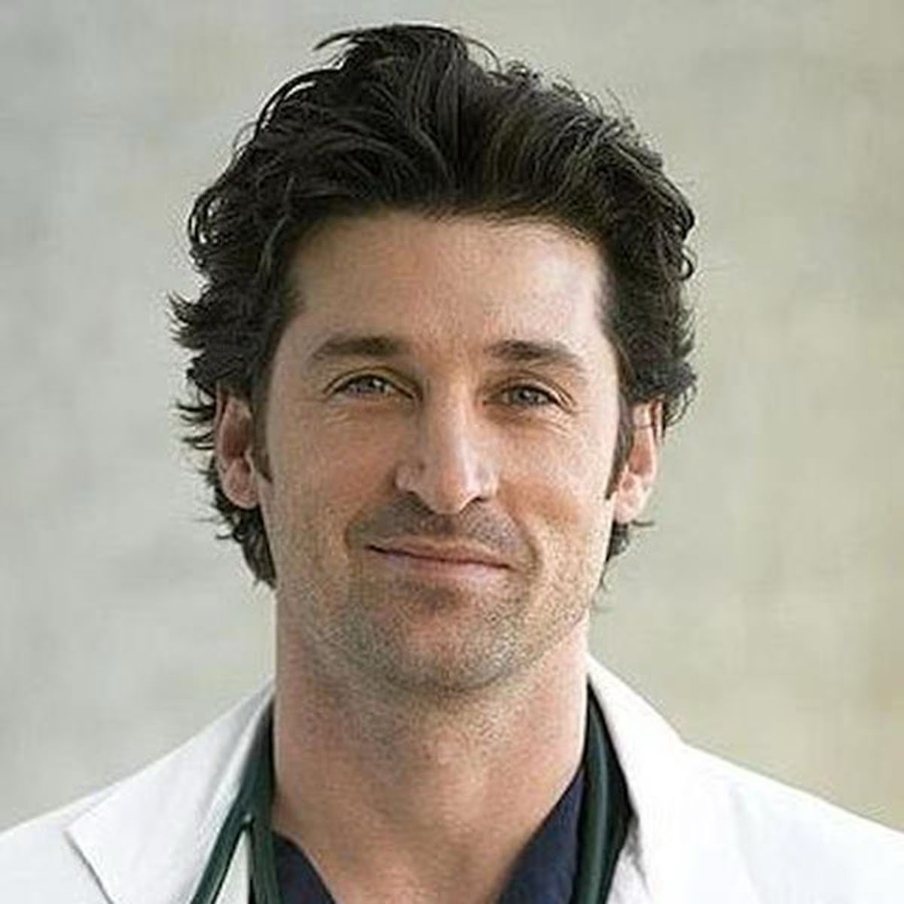

Dr.Vazquez Carlos José
Cirujano Cardiovascular PediátricoJefe de servicio y división de cirugía cardiovascular Pediatrico
Dr. Pellicciari Ramiro Marcos
Cirujano Cardiovascular PediátricoSub Jefe de servicio y división de cirugía cardiovascular Pediatrico
Dr.Segretín Sergio
Medico pediatra intensivista y neonatologoJefe de la división de recuperación cardiovascular